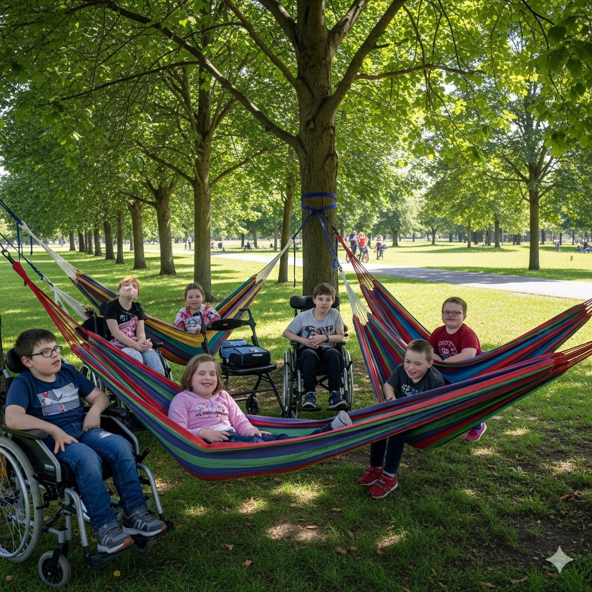
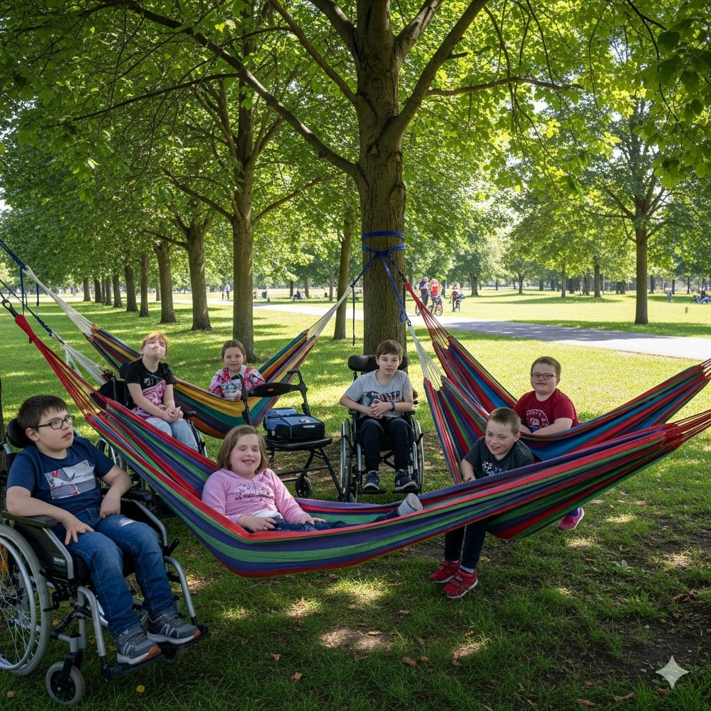

Про Проект "Терапевтичний Сад"
Проект "Терапевтичний Сад" – це ініціатива, спрямована на створення спеціально облаштованих зелених просторів, які сприяють фізичному та психологічному відновленню людей. Ми віримо, що контакт з природою є одним з найефективніших способів покращення самопочуття, зниження стресу та підвищення якості життя.
Наші сади розроблені з урахуванням принципів терапевтичного дизайну, що включає використання різноманітних рослин з цілющими властивостями, створення зон для спокою та медитації, а також місць для активного відпочинку та спілкування. Кожен елемент саду має на меті стимулювати органи чуття та забезпечувати відчуття гармонії.
Особливу увагу ми приділяємо доступності та інклюзивності, щоб Терапевтичний Сад міг служити якомога ширшому колу людей, включаючи людей з особливими потребами, ветеранів, літніх людей та дітей.
Наші Зображення
 


Відео про Проект
Дізнайтеся більше про наш проект у цьому відео.
Зв'яжіться з Нами
Якщо у вас є запитання або ви бажаєте долучитися до проекту "Терапевтичний Сад", будь ласка, зв'яжіться з нами:
- Електронна пошта: info@therapeuticgarden.org
- Телефон: +38 (0xx) xxx-xx-xx
- Адреса: м. Вінниця, вул. Садова, 10
Ми завжди відкриті для співпраці та нових ідей!